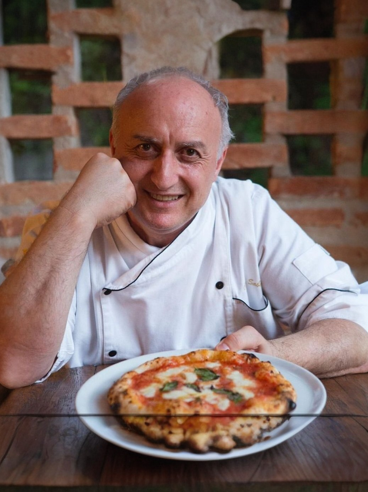

L'atmosfera
Um olhar dentro do Sabella


Culinária italiana autêntica, transmitida de geração em geração — preparada com paixão e os melhores ingredientes.

Ciro SabellaCresci em uma pequena cidade litorânea da Itália, onde o cheiro de manjericão fresco, tomates maduros e molho cozido lentamente fazia parte do dia a dia. Desde criança, ficava ao lado da minha nonna na cozinha e aprendi que a verdadeira culinária italiana não precisa de segredos — apenas de tempo, dedicação e os melhores ingredientes.
Essa filosofia marca cada prato que sai da minha cozinha. Trabalho com produtos cuidadosamente selecionados e combino receitas tradicionais com nuances modernas refinadas. Assim nascem pratos que não apenas saciam, mas evocam memórias e criam novas.
O que esperar de nós? Uma culinária italiana honesta, que se sente — da primeira garfada ao último bocado. Um lugar onde o prazer, a hospitalidade e o amor pelos detalhes estão no centro de tudo.
Buon appetito!
Será um prazer recebê-lo. Para reservas, ocasiões especiais ou grupos a partir de 8 pessoas, entre em contato diretamente por telefone ou e-mail.